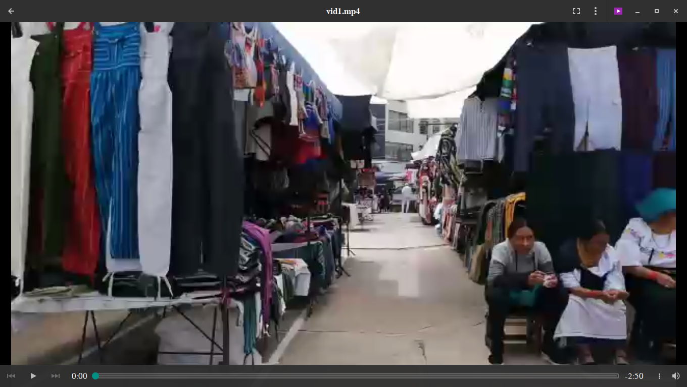
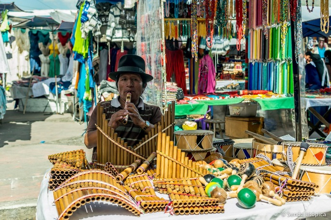
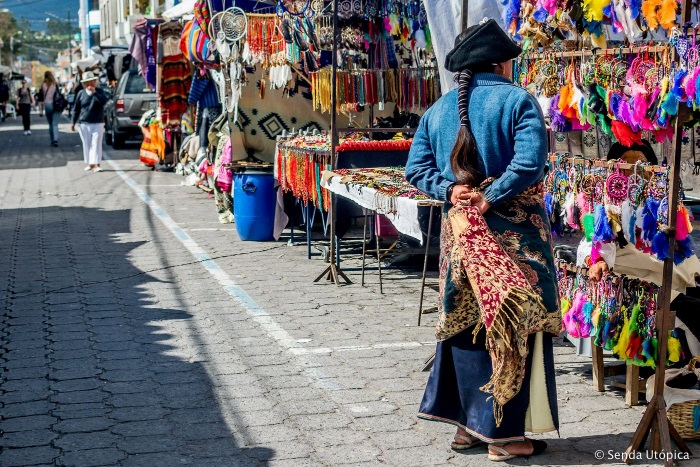
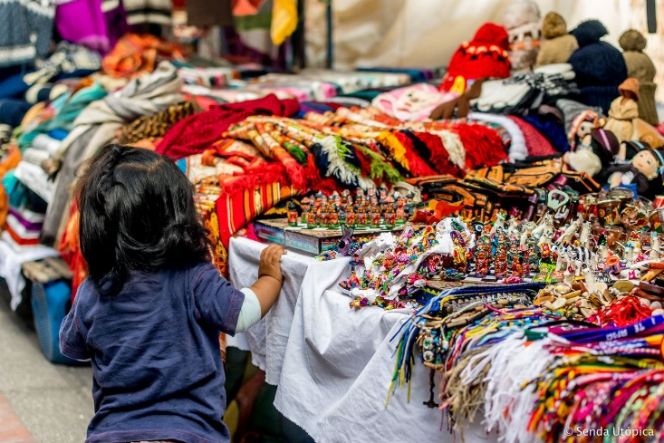

FOLKLORE ERGÓNOMICO
FOLKLORE ERGOLOGICO
ARTESANIAS DE OTAVALO
Debemos saber que su centro neurálgico es la conocida como plaza de los Ponchos, donde tiene lugar todos los días de la semana, pero su mayor esplendor lo alcanza los sábados.
Ahí encontrarás sobre todo los productos textiles de Otavalo, como sombreros, ponchos, bufandas, camisas, pantalones, alpargatas.
También podrás comprar otros tipos de productos de artesanía en barro, pinturas, maderas, bisutería, orfebrería, tanto originarios de Ecuador como de otros países. [ CITATION Jos17 \l 22538 ]

VIDEO
Un Reccorrido por la plaza de ponchos y sus artesanías

"La música es una cosa amplia, sin limites, sin fronteras, sin banderas."
- [León Geieco].

Los artesanos -artistas- han ido asimilando estos influjos pero manteniendo, en líneas generales, el arte popular tradicional con sus formas, técnicas y decoraciones heredadas.

En este sentido, cada pueblo según su psicología particular, dará a su obra de arte una personalidad propia y peculiar, sean cuales fueren las formas que traduzcan su necesidad de expresión.